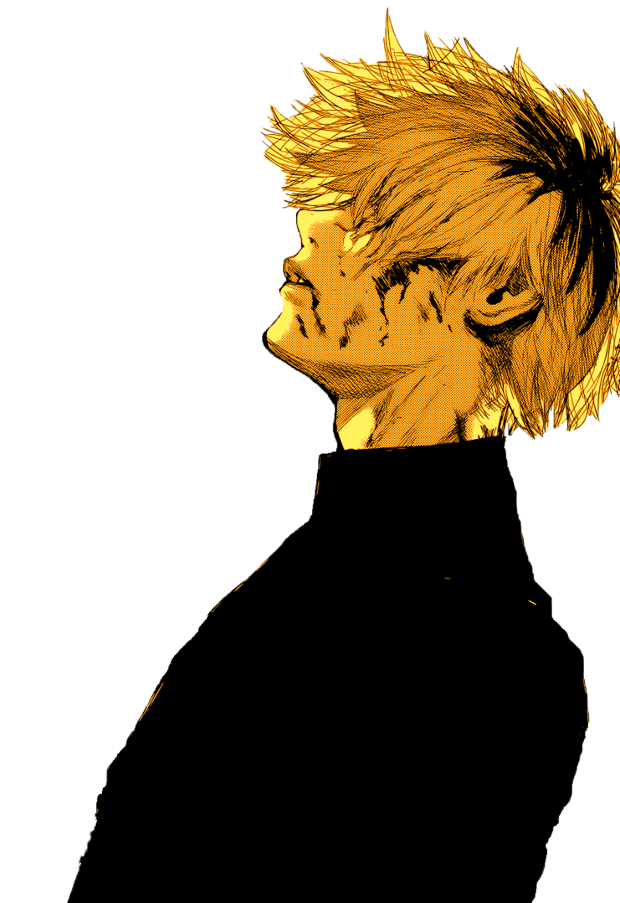

En sus inicios, alrededor de 1900, la animación japonesa recibe el nombre de senga eiga (literalmente “películas de líneas dibujadas”), más tarde se conocerá con el término Doga (imágenes en movimiento) y, finalmente, sobre 1960 pasará a llamarse animeeshon originalmente (アニメーション animēshon?). De ahí que se abrevie a «anime» (アニメ). Por otra parte se cree que es una palabra de origen francés. El anime es un medio de gran expansión en Japón, siendo al mismo tiempo un producto de entretenimiento comercial y cultural, lo que ha ocasionado un fenómeno cultural en masas populares y una forma de arte tecnológico. Es potencialmente dirigido a todos los públicos, desde niños, adolescentes, adultos; hasta especializaciones de clasificación esencialmente tomada de la existente para el manga, con clases base diseñadas para especificaciones sociodemográficos tales como empleados, amas de casa, estudiantes, etc. Por lo tanto, pueden hacer frente a los sujetos, temas y géneros tan diversos como el amor, aventura, ciencia ficción, cuentos infantiles, literatura, deportes, horror, fantasía, comedia y muchos otros. El anime tradicionalmente es dibujado a mano y al principio los procesos realizados de forma digital eran muy específicos (retoque y montaje). Sin embargo, en la actualidad las tareas más comunes dentro de la producción de una animación, como podría ser el coloreado o los efectos visuales (brillos, sombras, luz ambiental, etc.), se hacen con aplicaciones digitales, que permiten un mayor control sobre el trabajo y ayudan a agilizar la labor de los dibujantes a niveles insospechados en un proceso de animación tradicional. Sus guiones incluyen gran parte de los géneros de ficción y son transmitidos a través de medios audiovisuales (transmisión por televisión, distribución en formatos de vídeo doméstico y películas con audio). La relación del anime con el manga es estrecha, pues históricamente una gran cantidad de series y trabajos de anime se basan en historias de manga populares. Además, también guarda estrecha relación con las novelas visuales. El Anime se caracteriza fundamentalmente por el uso particular de la llamada animación limitada, la expresión en plano, la suspensión del tiempo, su amplitud temática, la presencia de referencias históricas, su compleja línea narrativa y sobre todo, un peculiar estilo neotenico de dibujo, con personajes caracterizados por ojos grandes y ovalados, de línea muy definida, colores llamativos y movimiento reducido de los labios
